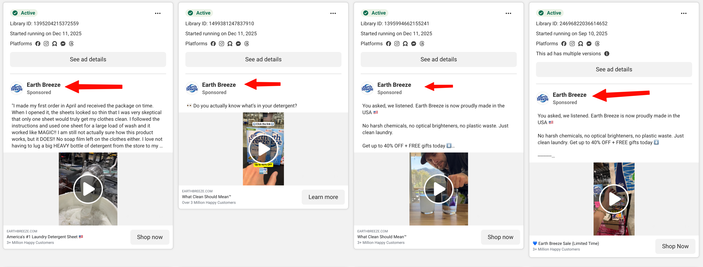
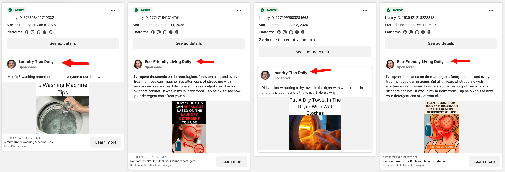
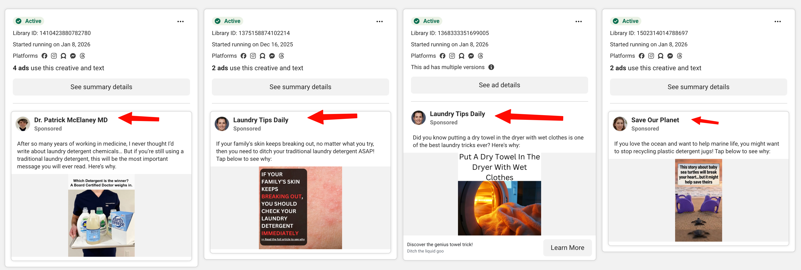

How to decide which ads to turn off when you're running out of room
"I'm getting close to my maximum number of ads allowed and Meta says I should turn some off. Do you have a strategy for cutting ads to keep room for more?"
Start with 30 days no spend, then 14, then 7. Safe to cut.
Profitable ads stay on. Period.
Lower cost cap or increase ROAS goal. Don't turn off yet.
Start with ads that haven't spent anything in 30 days, then 14 days, then 7 days. If it's at the same CPA target as ads that ARE spending but getting nothing, Meta has already told you it's not competitive.
When creating new ads, select a different page. This unlocks more active ad volume. Not uncommon for brands to run ads from 3-5+ different pages for the same product.
Be cautious here. An ad with "bad" metrics may be supporting your winners by driving top-of-funnel awareness. Try adjusting targets first before cutting.
Getting spend is the hardest part of the game.
If an ad is getting spend but has a poor CPA, I'd rather adjust the cost cap or ROAS target than turn it off. That ad might be serving a purpose beyond direct conversions - it could be what's allowing your other ads to have good metrics by doing top-of-funnel work.
That's why cutting zero-spend ads is the safest move. Meta already deprioritized them - you're just cleaning up.
EarthBreeze runs ads from multiple pages for the same brand. Here's what that looks like in the Meta Ad Library:

Brand pages: Traditional product-focused ads from the main Earth Breeze page

Content pages: "Laundry Tips Daily" and "Eco-Friendly Living Daily" - educational angles that don't feel like ads

Authority & cause pages: "Dr. Patrick McElaney MD" for credibility, "Save Our Planet" for mission-driven messaging
They're driving ~1 million visits/month to their website. Multiple pages = more ad slots = more creative testing capacity.
This isn't a hack - it's standard practice for scaling brands.
It's not an exact science - partially an art. Your choice depends on your batch sizes of new ads.
Generally, the longer an ad has gone without spend, the more confident you can be in turning it off. Start with the oldest zero-spend ads and work forward from there.